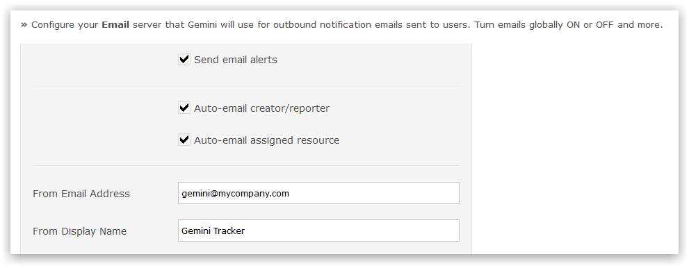
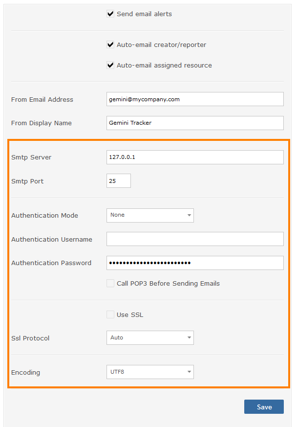

Email & Alerts
Alert Options

Send email alerts: globally enable to disable all email alerts
Auto-email creator/reporter: send a confirmation email to anyone who creates an item
Auto-email assigned resource: send a confirmation email to anyone who is assigned as a resource
From Email Address: used for outbound email alerts
From Display Name: use for outbound email alerts
Mail Server Configuration

To receive email notifications from Gemini you must configure an SMTP server.
- SMTP Server: specify IP or server name such as smtp.myco.com
- SMTP Port: the port of the SMTP server (usually 25)
- Authentication Mode: authentication mode, if any
- Authentication Username: username for authentication
- Authentication Password: password for authentication
- Call POP3 Before Sending Emails: will perform POP operation before invoking SMTP actions
- Use SSL: whether you need to use SSL
- Ssl Protocol: the SSL protocol
- Encoding: default text encoding
- Enable Diagnostic Output: logs diagnostic information to the System Log